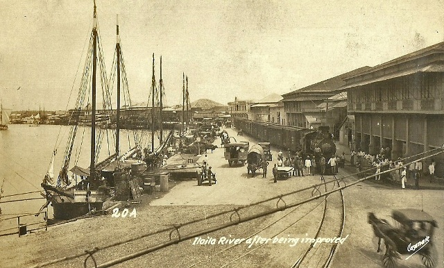

The Maragtas Legend recounts the ancient history of Iloilo, dating back to the 13th century. According to the legend, Datu Puti and other Datus, along with their families, warriors, and slaves, escaped from the oppression of Sultan Makatunao of Borneo. They arrived at the mouth of the Sirawag River, which is presently recognized as the town of San Joaquin, and eventually established their settlement there.
During that era, Panay Island was inhabited by the "Atis," who were under the rule of King Marikudo and Queen Maniwangtiwang. In a significant exchange, King Marikudo traded the lowlands of Panay Island to the Bornean Datus in return for a golden hat called "saduk," a long gold necklace referred to as "manangyad," and various other gifts. This transaction granted the Bornean Datus complete authority over the island, prompting the "Atis" to retreat to the mountains. Datu Paiburong was then assigned to govern Irong-Irong, later recognized as Iloilo, shaped like a nose.
Panay Island flourished under the Code of Kalantiao, enjoying a period of peace and prosperity that lasted for 300 years. However, this era was interrupted with the arrival of the Spaniards, who established their provincial government in the region.
The Municipio de Iloilo was elevated to city status under the Bacura Law in 1893. Two years later, in 1896, the King of Spain honored the City of Iloilo with the titles "la muy leal" and "noble ciudad de Iloilo," acknowledging the loyalty of its people to the Spanish Government.
During the Philippine Revolution, General Martin Delgado of Santa Barbara spearheaded the Panay uprising against the Spaniards, liberating all towns except Iloilo City, Molo, and Jaro. The American arrival at the Iloilo port on December 28, 1898, marked a significant turning point. By April 11, 1901, Iloilo City, which had reverted to municipality status, emerged as the primary port and trading hub of Panay and Negros due to its steady progress.
Commonwealth Act No. 158 later incorporated the surrounding towns of Lapaz, Jaro, Mandurriao, and Arevalo to form Iloilo City. This amalgamation was officially inaugurated on August 25, 1937, earning the city the moniker "Queen City of the South." General Martin Delgado subsequently became the first governor of the Province of Iloilo.